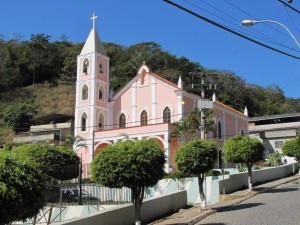

Prefeitura de
São Sebastião do Alto
Prefeitura de
São Sebastião do Alto
►
O Municipio
Município: São Sebastião do Alto
Aniversário: 17 de abril de 1981
Gentílico: altense
Unidade federativa: Rio de Janeiro
Distância até a capital: 232 km
Municípios limítrofes: Cantagalo, Itaocara, Macuco, Santa Maria Madalena, São Fidélis e Trajano de Moraes
Área: 397,180 km²
População: 8.906 habitantes (Censo IBGE/2010)
Densidade: 22,42 hab./km²
Altitude: 575 m
São Sebastião do Alto é um município brasileiro do estado do Rio de Janeiro e conta com uma população aproximada de 8906 habitantes (IBGE 2010). Estende-se por uma área de 373,26 km², a cerca de três horas de viagem da cidade do Rio de Janeiro e a uma hora de Nova Friburgo.
Conhecido como a Mesopotâmia Fluminense, o município de São Sebastião do Alto tem a sede localizada na “Serra do Deus Me Livre”, com um clima agradável e uma população estimada em pouco mais de nove mil habitantes, divididos em quatro distritos sendo: o Primeiro, Sede; o Segundo, Valão do Barro; o Terceiro, Ipituna e o Quarto, Ibipeba. Em 17 de abril de 1891, foi elevado à cidade e criado o município de São Sebastião do Alto.
São Sebastião do Alto tem como principais rios, o Negro e o Grande que margeiam todo o limite de um lado ao outro de todo o território geográfico do município e faz limite com os municípios de Macuco, Cantagalo, Trajano de Moraes, Santa Maria Madalena, São Fidélis e Itaocara. Hoje com 123 anos de criação tem um dos prefeitos mais jovens da história, Mauro Henrique Silva Queiroz Chagas, que conduz o executivo municipal com humildade, muita dedicação e trabalho.
Atualmente, o município de São Sebastião do Alto destaca-se como um dos maiores fornecedores de leite da cooperativa de Macuco.
O Brasão do município foi criado pela professora Beatriz Fajardo de Oliveira Viana, uma altense de coração, que chegou ao município no ano de 1954 para lecionar a convite do tio Hermes Ferro, prefeito na época. Para o desenho, a professora se inspirou na beleza da pequena São Sebastião do Alto, nas atividades econômicas do período, a pecuária e a agricultura, que tinha como maior força a cana-de-açúcar e o milho. A coroa imperial e as cores da Bandeira Nacional foram aplicadas no emblema.
O município também teve uma pessoa ilustre no setor da medicina, que foi Dr. Francisco de Paula Fajardo Júnior. Este foi um pioneiro nas pesquisas científicas que colaborou para o tratamento e a cura de doenças como: a descoberta do parasita causador da Malária e da Febre Amarela. Além disso, o médico teve publicações científicas relevantes realizadas junto com Carlos Chagas, Osvaldo Cruz, Adolph Lutz entre outros.
Três eventos se destacam no setor cultural e religioso do município que são: a Festa do Padroeiro São Sebastião, Procissão de Santa Irene de Nazareth e a Encenação da Paixão de Cristo. O dia do padroeiro é comemorado no dia 20 de janeiro com missa, procissão e a parte social com shows na Praça Dr. Hermes Ferro. O evento atrai muitos visitantes. Vale ressaltar que cada distrito tem o seu padroeiro sendo: Nossa Senhora do Livramento, Valão do Barro; Santa Luzia, Ipituna e São Fidélis, Ibipeba. Assim sendo, feriados municipais nestes dias. A procissão em devoção à Santa Irene de Nazareth ocorre há vários anos em que se inicia na Igreja Matriz, e assim, se dirige em direção à capela localizada em uma elevação que do lado esquerdo se avista um profundo vale e a Pedra de Santa Irene local de provável aparecimento da santa numa pedra.
O Teatro da Paixão de Cristo é uma prática cultural, onde a sociedade ao longo dos anos pode assistir a um evento que envolve pessoas da comunidade na participação e comovem todos os presentes com cenas fortes da morte de Cristo. Anteriormente, a população se mobilizava, produziam suas vestis e tudo se transformava num momento de reflexão. Durante um período a encenação ficou apenas sendo feita dentro da igreja. No ano de 1991, com a criação da Companhia de Teatro do Centro Cultural Padre Peter Joseph Corbett, a Encenação da Paixão de Cristo começou a ser apresentada em praça pública. Hoje conta com um grupo de noventa atores, se tornando a cada ano que passa um evento ainda maior. Desta forma, atraindo um número considerado de visitantes de outros municípios para assistirem ao espetáculo.
Conhecida como Mesopotâmia Fluminense, o município de São Sebastião do Alto tem a sede localizada próxima a Serra do Deus Me Livre. Possui um clima agradável e uma população com pouco mais de nove mil habitantes. Sua principal singularidade é a configuração geográfica harmônica. O céu acolhedor o protege entre montanhas, rios e vales. Uma altitude bem expressiva dá-nos a impressão de uma linda paisagem moldurada pela própria natureza.
Segundo historiadores, desbravadores aqui vieram motivados pela febre do ouro, que na metade do século XVIII, arrastou bandos de aventureiros para as margens dos córregos auríferos e afluentes dos rios Macuco, Negro e Grande, dirigidos pelo legendário bandoleiro Manoel Henrique, conhecido pela alcunha de Mão de Luva.
Seus primeiros habitantes foram formados por tribos de Coroados e Goitacás dominados pelos desbravadores por seu número e valentia. Desiludidos por não haver encontrado o metal, muitos dos garimpeiros foram embora, outros aqui permaneceram, se firmaram, e como colonizadores se ramificaram, divididos em Italianos, Portugueses, Caboclos e Negros. Desenvolveram a agricultura do café e criaram o arraial de São Sebastião do Alto, elevado a Curato sobre o Decreto Provincial Nº 600 de 20/09/1852, com Freguesia em Santa Rita no Município de Cantagalo.
Em 1855 foi elevado à Freguesia, obedecendo desta ao Município de Santa Maria Madalena e mais tarde a comunidade de São Francisco de Paula. Em 17 de abril de 1891, foi elevado à cidade. O Município de São Sebastião do Alto, que conta atualmente com quatro distritos, sendo a Primeira Sede São Sebastião do Alto, o segundo Valão do Barro, o terceiro Ipituna e o quarto Ibipeba. Atualmente o município de São Sebastião do Alto se destaca como uns dos maiores produtores de leite da região. Suas plantações de cana de açúcar, cereais e legumes enriquecem sua agricultura.
O Município mantém suas festas religiosas preservadas, onde suas procissões são sempre acompanhadas pela tradicional Banda Musical Santa Irene de Nazareth. O Grupo de Dança Bumba meu boi, o Grupo de Dança Mineiro Pau e as Folias de Reis têm por objetivo resgatar e divulgar a cultura folclórica. A Companhia de Teatro do Centro Cultural PE. Peter Joseph Corbett além de realizar peças na região tem como ponto forte a encenação da Paixão de Cristo que acontece todo ano em via pública com média de 90 atores e uma produção de 40 pessoas, além da participação de entidades religiosas e da comunidade. É um município aconchegante, com metas alcançadas na saúde e na educação, visando uma maior qualidade nos serviços prestados e sempre respeitando a preservação de sua cultura, bem como de suas belezas naturais.